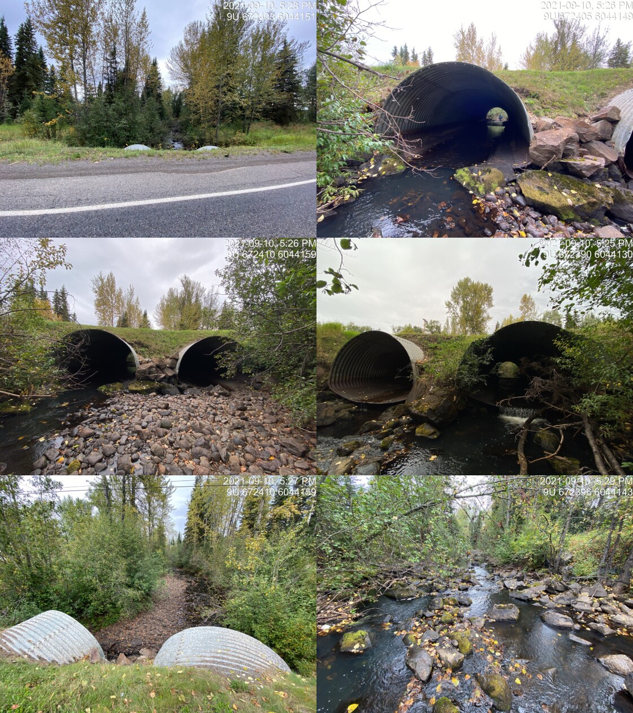

Richfield Creek - 197662 - Appendix
Site Location
PSCIS crossing 197662 is located on Richfield Creek approximately 30km east of Houston, BC with the highway located approximately 1.2km upstream upstream from the confluence with the Bulkley River. Highway 16 is the responsibility of the Ministry of Transportation and Infrastructure.
Background
At crossing 197662, Richfield Creek is a fifth order stream with a watershed area upstream of the crossing of approximately 161.3km2. The elevation of the watershed ranges from a maximum of 1753m to 650m near the crossing (Table 5.23). Upstream of crossing 197662, longnose sucker, lake chub, longnose dace, coho salmon, rainbow trout, steelhead, and chinook salmon have previously been recorded upstream (MoE 2020b; Norris 2020). Habitat modelling outputs are presented in Table 5.24. A map of the watershed is provided in map attachment 093L.115.
fpr::fpr_table_wshd_sum(site_id = my_site) %>%
fpr::fpr_kable(caption_text = paste0('Summary of derived upstream watershed statistics for PSCIS crossing ', my_site, '.'),
footnote_text = 'Elev P60 = Elevation at which 60% of the watershed area is above',
scroll = F)| Site | Area Km | Elev Site | Elev Min | Elev Max | Elev Median | Elev P60 | Aspect |
|---|---|---|---|---|---|---|---|
| 197662 | 161.3 | 676 | 650 | 1753 | 1096 | 1039 | SSW |
| * Elev P60 = Elevation at which 60% of the watershed area is above |
A habitat confirmation assessment was conducted by Irvine (2021) in 2020 and the reader is directed there for detailed background, habitat assessment and fish sampling information from 2020 surveys. Acquisition of high resolution aerial imagery and fish sampling was conducted at the site in 2021 to provide context for crossing prioritization. Additionally, Society for Ecosystem Restoration BC, Fisheries and Oceans Canada and the Morice Watershed Monitoring Trust were able to collaborate in 2021 to provide funding for the installation of barbed wire fenceing adjacent to a buffer on the west bank of Richfield Creek below the highway as a restorative action to exclude cattle from the riparian area. Details of these three activities are provided below.
fpr::fpr_table_bcfp(scroll = gitbook_on) | Habitat | Potential | Remediation Gain | Remediation Gain (%) |
|---|---|---|---|
| ST Network (km) | 70.8 | 50.9 | 72 |
| ST Lake Reservoir (ha) | 2.5 | 2.0 | 80 |
| ST Wetland (ha) | 198.5 | 65.8 | 33 |
| ST Slopeclass03 Waterbodies (km) | 8.7 | 0.0 | 0 |
| ST Slopeclass03 (km) | 31.9 | 23.8 | 75 |
| ST Slopeclass05 (km) | 20.6 | 16.4 | 80 |
| ST Slopeclass08 (km) | 7.2 | 3.3 | 46 |
| ST Spawning (km) | 11.8 | 11.8 | 100 |
| ST Rearing (km) | 14.4 | 14.4 | 100 |
| CH Spawning (km) | 11.8 | 11.8 | 100 |
| CH Rearing (km) | 12.8 | 12.8 | 100 |
| CO Spawning (km) | 16.4 | 16.4 | 100 |
| CO Rearing (km) | 32.8 | 26.0 | 79 |
| CO Rearing (ha) | 104.4 | 0.0 | 0 |
| SK Spawning (km) | 0.0 | 0.0 | – |
| SK Rearing (km) | 0.0 | 0.0 | – |
| SK Rearing (ha) | – | 0.0 | – |
| All Spawning (km) | 16.4 | 16.4 | 100 |
| All Rearing (km) | 33.2 | 26.5 | 80 |
| All Spawning Rearing (km) | 33.2 | 26.5 | 80 |
| * Model data is preliminary and subject to adjustments. |
Stream Characteristics at Crossing
Although, culvert measurement data was recycled from 2020, crossing photos were retaken (Table 5.25).
fpr::fpr_table_cv_summary_memo()| Location and Stream Data |
|
Crossing Characteristics | – |
|---|---|---|---|
| Date | 2021-09-10 | Crossing Sub Type | Round Culvert |
| PSCIS ID | 197662 | Diameter (m) | 4.2 |
| External ID | – | Length (m) | 24 |
| Crew | AI | Embedded | No |
| UTM Zone | 9 | Depth Embedded (m) | – |
| Easting | 672404.7 | Resemble Channel | No |
| Northing | 6044146 | Backwatered | No |
| Stream | Richfield Creek | Percent Backwatered | – |
| Road | Highway 16 | Fill Depth (m) | 1 |
| Road Tenure | MoTi highway | Outlet Drop (m) | 0.2 |
| Channel Width (m) | 12.5 | Outlet Pool Depth (m) | 1 |
| Stream Slope (%) | 1.5 | Inlet Drop | No |
| Beaver Activity | No | Slope (%) | 2 |
| Habitat Value | High | Valley Fill | Deep Fill |
| Final score | 29 | Barrier Result | Barrier |
| Fix type | Replace with New Open Bottom Structure | Fix Span / Diameter | 16.5 |
| Photos: From top left clockwise: Road/Site Card, Barrel, Outlet, Downstream, Upstream, Inlet. | |||
| Comments: Culvert and habitat measurements taken in 2020. Multipass closed site electorfishing conducted in 2021 upstream and downstream of highway. 17:25 |
5.2 Aerial Imagery
Surveys were conducted with a remotely piloted aircraft upstream of the crossing with resulting images stitched into an orthomosaic and 3-dimensional model presented in Figures 5.34 - 5.35.
model_url <- '<iframe src="https://www.mapsmadeeasy.com/maps/public/fe773f4deef84939b04f5e941e35506a" scrolling="no" title="Maps Made Easy" width="100%" height="600" frameBorder ="0"></iframe>'
knitr::asis_output(model_url)my_photo = 'fig/pixel.png'
my_caption = paste0('Orthomosaic of habitat immediately upstream and downstream of Richfield Creek. To zoom press "shift" and scroll.')
knitr::include_graphics(my_photo, dpi = NA)Figure 5.34: Orthomosaic of habitat immediately upstream and downstream of Richfield Creek. To zoom press “shift” and scroll.
model_url <- '<iframe src="https://www.mapsmadeeasy.com/maps/public_3D/fe773f4deef84939b04f5e941e35506a" scrolling="no" title="Maps Made Easy" width="100%" height="600" frameBorder ="0"></iframe>'
knitr::asis_output(model_url)my_photo = 'fig/pixel.png'
my_caption = paste0('3D model of habitat immediately upstream and downstream of Richfield Creek. To zoom press "shift" and scroll.')
knitr::include_graphics(my_photo, dpi = NA)Figure 5.35: 3D model of habitat immediately upstream and downstream of Richfield Creek. To zoom press “shift” and scroll.
5.3 Fish Sampling
Multipass electrofishing was conducted at three sites upstream of the highway and three sites downstream. Water temperature was 10\(^\circ\)C, pH was 8.1 and conductivity was 234uS/cm. results are summarised in Tables 5.26 - 5.27 and Figure 5.36. Photos are provided in (Figures 5.37 - 5.40).
fpr_table_fish_site()| site | passes | ef_length_m | ef_width_m | area_m2 | enclosure |
|---|---|---|---|---|---|
| 197662_ds_ef1 | 6 | 21.4 | 6.10 | 130.5 | Closed |
| 197662_ds_ef2 | 4 | 5.8 | 5.60 | 32.5 | Closed |
| 197662_ds_ef3 | 3 | 4.2 | 6.05 | 25.4 | Closed |
| 197662_us_ef1 | 4 | 6.4 | 7.00 | 44.8 | Closed |
| 197662_us_ef2 | 3 | 5.1 | 4.83 | 24.6 | Closed |
| 197662_us_ef3 | 3 | 5.6 | 2.73 | 15.3 | Closed |
fpr_table_fish_density()| local_name | species_code | life_stage | catch | density_100m2 | nfc_pass |
|---|---|---|---|---|---|
| 197662_ds_ef1 | CO | fry | 12 | 9.2 | TRUE |
| 197662_ds_ef1 | CO | parr | 65 | 49.8 | FALSE |
| 197662_ds_ef1 | L | – | 3 | 2.3 | FALSE |
| 197662_ds_ef1 | LSU | – | 1 | 0.8 | TRUE |
| 197662_ds_ef1 | MW | parr | 6 | 4.6 | TRUE |
| 197662_ds_ef1 | RB | fry | 29 | 22.2 | FALSE |
| 197662_ds_ef1 | RB | parr | 42 | 32.2 | FALSE |
| 197662_ds_ef1 | RB | juvenile | 9 | 6.9 | TRUE |
| 197662_ds_ef1 | RB | adult | 4 | 3.1 | TRUE |
| 197662_ds_ef1 | SU | – | 14 | 10.7 | FALSE |
| 197662_ds_ef2 | CO | fry | 17 | 52.3 | FALSE |
| 197662_ds_ef2 | CO | parr | 5 | 15.4 | TRUE |
| 197662_ds_ef2 | L | – | 6 | 18.5 | FALSE |
| 197662_ds_ef2 | RB | fry | 11 | 33.8 | FALSE |
| 197662_ds_ef2 | RB | parr | 7 | 21.5 | TRUE |
| 197662_ds_ef2 | RB | adult | 2 | 6.2 | TRUE |
| 197662_ds_ef2 | SU | – | 3 | 9.2 | TRUE |
| 197662_ds_ef3 | CO | fry | 2 | 7.9 | TRUE |
| 197662_ds_ef3 | CO | parr | 3 | 11.8 | FALSE |
| 197662_ds_ef3 | L | – | 1 | 3.9 | TRUE |
| 197662_ds_ef3 | RB | fry | 7 | 27.6 | FALSE |
| 197662_ds_ef3 | RB | parr | 7 | 27.6 | TRUE |
| 197662_ds_ef3 | SU | – | 3 | 11.8 | TRUE |
| 197662_us_ef1 | CO | fry | 6 | 13.4 | FALSE |
| 197662_us_ef1 | CO | parr | 2 | 4.5 | TRUE |
| 197662_us_ef1 | L | – | 3 | 6.7 | TRUE |
| 197662_us_ef1 | RB | fry | 43 | 96.0 | FALSE |
| 197662_us_ef1 | RB | parr | 16 | 35.7 | TRUE |
| 197662_us_ef1 | RB | juvenile | 4 | 8.9 | TRUE |
| 197662_us_ef1 | RB | adult | 1 | 2.2 | FALSE |
| 197662_us_ef2 | CO | fry | 5 | 20.3 | TRUE |
| 197662_us_ef2 | CO | parr | 5 | 20.3 | FALSE |
| 197662_us_ef2 | L | – | 1 | 4.1 | FALSE |
| 197662_us_ef2 | RB | fry | 38 | 154.5 | FALSE |
| 197662_us_ef2 | RB | parr | 22 | 89.4 | FALSE |
| 197662_us_ef2 | RB | juvenile | 2 | 8.1 | TRUE |
| 197662_us_ef3 | CO | fry | 5 | 32.7 | FALSE |
| 197662_us_ef3 | CO | parr | 1 | 6.5 | TRUE |
| 197662_us_ef3 | L | – | 5 | 32.7 | FALSE |
| 197662_us_ef3 | RB | fry | 18 | 117.6 | TRUE |
| 197662_us_ef3 | RB | parr | 4 | 26.1 | FALSE |
|
* nfc_pass FALSE means fish were captured in final pass indicating more fish of this species/lifestage may have remained in site. Mark-recaptured required to reduce uncertainties. |
my_caption <- paste0('Densites of fish (fish/100m2) captured upstream and downstream of PSCIS crossing ', my_site, '.')
fpr_plot_fish_box() Figure 5.36: Densites of fish (fish/100m2) captured upstream and downstream of PSCIS crossing 197662.
my_photo1 = fpr::fpr_photo_pull_by_str(str_to_pull = 'ds_ef1_')
my_caption1 = paste0('Habitat downstream of PSCIS crossing ', my_site, '.')
# fpr::fpr_photo_flip(site_id = 1802488, str_to_pull = '6257')grid::grid.raster(jpeg::readJPEG(my_photo1))Figure 5.37: Habitat downstream of PSCIS crossing 197662.
my_photo2 = fpr::fpr_photo_pull_by_str(str_to_pull = '_f1_')
my_caption2 = paste0('Lamprey captured downstream of PSCIS crossing ', my_site, '.')grid::grid.raster(jpeg::readJPEG(my_photo2))Figure 5.38: Lamprey captured downstream of PSCIS crossing 197662.
my_caption <- paste0('Left: ', my_caption1, ' Right: ', my_caption2)
knitr::include_graphics(my_photo1)
knitr::include_graphics("fig/pixel.png")
knitr::include_graphics(my_photo2)my_photo1 = fpr::fpr_photo_pull_by_str(str_to_pull = '_ef2_')
my_caption1 = paste0('Habitat upstream of PSCIS crossing ', my_site, '.')grid::grid.raster(jpeg::readJPEG(my_photo1))Figure 5.39: Habitat upstream of PSCIS crossing 197662.
my_photo2 = fpr::fpr_photo_pull_by_str(str_to_pull = '_ef3_')
my_caption2 = paste0('Habitat upstream of PSCIS crossing ', my_site, '.')grid::grid.raster(jpeg::readJPEG(my_photo2))Figure 5.40: Habitat upstream of PSCIS crossing 197662.
my_caption <- paste0('Left: ', my_caption1, ' Right: ', my_caption2)
knitr::include_graphics(my_photo1)
knitr::include_graphics("fig/pixel.png")
knitr::include_graphics(my_photo2)5.4 Riparian Fenceing
Approximately 1100 m of new four strand barbed wire fencing was installed to the west of Richfield Creek between November 26 and December 14, 2021. Fencing of the area complemented significant restoration work completed in by the Morice Watershed Monitoring Trust project which included bank stabilization, installation of vertical posts for bank stability, live stakeing of willow/cottonwood and planting of rooted willow plugs. Details of the work conducted is documented in Wrench (2022) and included as Attachment 4.
Conclusion
There was 197662 is 32.8km of habitat modelled upstream of the crossing with areas surveyed in 2020 rated as high value for salmonid rearing and spawning (Irvine 2021). There is extensive background information on this system summarized in Irvine (2021) and in development at the time of reporting. Crossing 197662 was ranked as a high priority for proceeding to design for replacement. As Richfield Creek is a high value fish stream with cold water inputs and significant historic and ongoing impacts due to adjacent land use (linear development, residential development, cattle trampled banks and grazed/removed riparian vegetation) it is recommended that individuals, organizations and regulators continue to work with adjacent landowners and tenure holders to implement stream restoration actions, exclude cattle from the riparian area, and explore possibilities related to progressive beaver management in the watershed.
knitr::opts_chunk$set(echo=FALSE, message=FALSE, warning=FALSE)
source('scripts/packages.R')
source('scripts/tables.R')my_site <- 197909
# my_site2 <- 123377